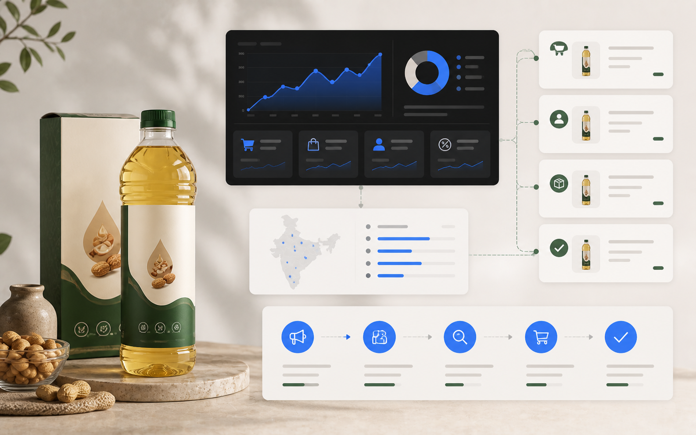

A clear commercial problem
The campaign needed a path from demand to measurable action, not only more visibility.
Case study
WIF supported the Ayurveda brand in moving online, launching an MVP and reaching first buyers through digital acquisition.
Case context
Each case is useful because it connects acquisition, page clarity, follow-up or reporting to a business outcome.
The campaign needed a path from demand to measurable action, not only more visibility.
The work connected paid or organic demand with conversion and response workflows.
The lesson is used to shape future audits, service pages and campaign decisions.
Method
WIF presents case data with limits so buyers can judge relevance to their own funnel.

Case result First salesReported proof
WIF supported the Ayurveda brand in moving online, launching an MVP and reaching first buyers through digital acquisition.
FAQ
No. They are reported portfolio outcomes and should be read with context.
The audit identifies which parts of the case pattern are relevant to your market and funnel.
Share your current website, campaign data, lead process, target market and growth goal.
Free growth audit